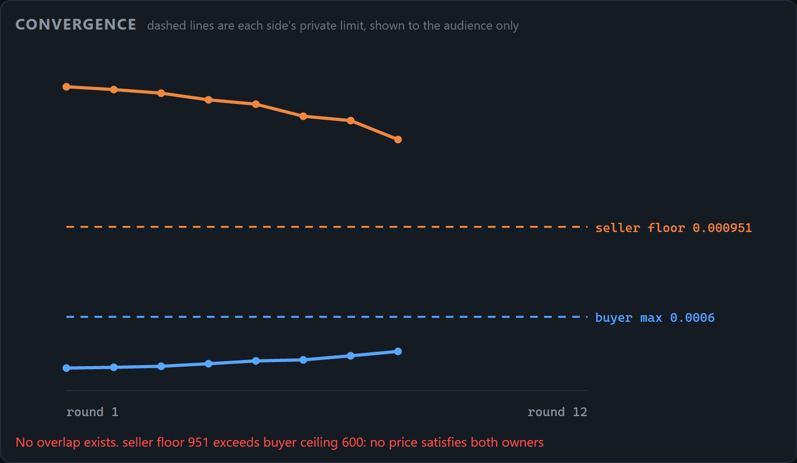
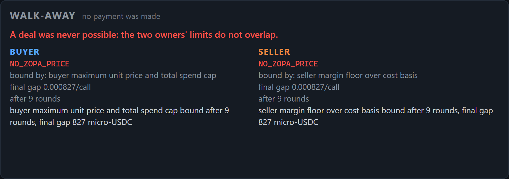

Encode × Arc - Programmable Money Hackathon · Final submission
Parley
Agents that negotiate the price, then pay it.
A buyer and a seller strike deals inside owner-set guardrails and settle in USDC on Arc.
Track: Agentic Economy
parley-blond.vercel.app
github.com/edwardparker8760/parley
148 tests green
PARLEY
The gap
Agent payments exist. Agent pricing does not.
Today: fixed-price payments
Existing agentic-payment demos, including Circle's own nanopayments starter, show an agent paying a fixed, posted price. The economically interesting step, deciding what the price should be, never happens.
Parley: price discovery
Two agents with opposing interests negotiate price, quantity and terms on behalf of their owners. Settlement is the last step, not the product.
If agents are going to transact for us, they must be able to disagree, concede, and walk away, without ever breaking their owner's limits.
PARLEY
The claim
Owner limits are arithmetic, not instructions
Deterministic layer: correctness
- Utility functions and a back-loaded concession schedule
- ZOPA inferred from revealed offers only
- Hard guardrail clamp computes the feasible band; nothing outside it can be sent
- An independent egress guard on the bus re-derives the band and rejects breaches
LLM layer: judgement and legibility
- Chooses where inside a 2% window to land
- Writes the rationale attached to every offer
- Schema-validated; an out-of-band pick is discarded, its words kept
- Timeout, transport error and bad schema all fall back deterministically
The band is computed before the model is consulted and re-checked twice after. A fully compromised model still cannot produce an out-of-band offer.
PARLEY
Tested, not asserted
The safety claim, mechanically checked
0
out-of-band offers on the wire from a model answering 99999999 to every prompt, across all three scenarios. Every refusal is logged with the number arithmetic threw away.
0
settlement calls on a walk-away. Unreachable by construction, asserted by a counting-spy test over scenario C, against exactly 1 for scenario A.
148
tests: band properties over an adversarial corpus, prompt injection through the counterparty's own text, prompt-leak in both directions, byte-identical replay from SQLite.
Swapping the LLM provider mid-build changed zero tests in the injection suite. The safety property belongs to the arithmetic, not to the model.
PARLEY
Circle stack
What each Circle tool does here
Arc Testnet
eip155:5042002. The chain settlement lands on. USDC at 0x3600..., RPC rpc.testnet.arc.network.
Circle Gateway
GatewayClient holds the buyer's Gateway balance and signs the EIP-3009 authorisation. Deposit, balances and withdrawal all run through it.
Nanopayments x402
@circle-fin/x402-batching@3.2.0. Buyer pay() runs the full 402 flow against a seller endpoint built with createGatewayMiddleware.
x402 facilitator
gateway-api-testnet.circle.com verifies and settles. Passed explicitly, because the SDK default is mainnet.
Read from the installed SDK, not the blog post: GatewayClient takes a raw EVM key via viem. No API key, no entity secret, no Developer-Controlled Wallets in the payment path. That finding made the credential blocker smaller, and it is written down.
PARLEY
Scenario C, the one that matters
No overlap: both walk away, nothing is paid


The dashed lines are each side's private limit: neither agent sees the other's, the audience sees both. The seller's floor sits above the buyer's ceiling, so no price satisfies both owners. The agents establish that in nine rounds, then each files a post-mortem naming the limit that bound it.
PARLEY
Where it landed
Built, and what is deliberately not claimed
Built
- ✓ Protocol, ledger and a turn loop whose round cap sits outside both agents
- ✓ Guardrail engine: two independent checks over one pure band function
- ✓ Utility, concession schedule, dual ZOPA detection
- ✓ Bounded LLM, wired in, every consultation logged
- ✓ Settlement on accept, post-mortems on walk-away
- ✓ One real payment on Arc Testnet: 9.23 USDC through Circle Gateway, authorised in 857ms, Gateway balance down exactly 9,230,000 atomic units
- ✓ One-screen dashboard, live and replayable
Not claimed
- The real path has run once. Every other settlement figure, including all three recorded runs, comes from the local stub and is badged SIMULATED.
- Authorisation and on-chain settlement are separate latencies. Circle batches and there is no flush, so "authorised in 857ms" is not "confirmed in 857ms".
- Testnet only.
- Prompts go to a third-party API.
- No identity or reputation layer. Scoped, then cut on day one of six.
Next: on-chain, sybil-resistant reputation, so a seller's history survives across marketplaces and cannot be reset by spinning up a fresh address.
PARLEY